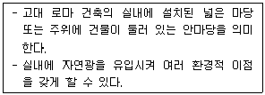
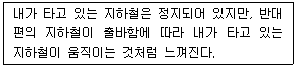
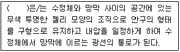
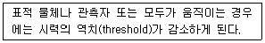
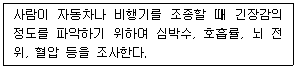
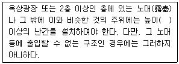
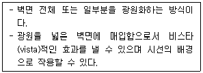
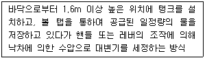

실내건축기사(구) (2021-05-15 기출문제)
1과목: 실내디자인론
1. 질감(texture)에 관한 설명으로 옳지 않은 것은?
- 물체가 갖고 있는 표면상의 특징이다.
- 촉각적 질감과 시각적 질감으로 구분할 수 있다.
- 매끄러운 질감은 빛을 흡수하며, 거친 질감은 빛을 반사한다.
- 효과적인 질감 표현을 위해서는 색채와 조명을 동시에 고려하여야 한다.
(정답률: 89%)

2. 단독주택의 거실에 관한 설명으로 옳지 않은 것은?
- 정원에 면한 창은 가능한 크게 하여 시각적 개방감을 얻도록 한다.
- 현관에서 가까운 곳에 위치하되 직접 면하는 것은 피하는 것이 좋다.
- 거실의 규모는 가족 수, 주택의 규모, 접객 빈도, 주생활양식 등에 의해 결정된다.
- 각 실에서의 접근이 용이하도록 각 실을 연결하는 동선의 분기점이면서 각 실로의 통로 역할을 하도록 한다.
(정답률: 68%)
3. 주택에서 부엌의 일부에 간단한 식탁을 설치하거나 식당과 부엌을 한 공간에 구성한 형식은?
- 독립형
- 다이닝 키친
- 리빙 다이닝
- 다이닝 테라스
(정답률: 89%)
4. 리듬(Rhythm)의 원리에 속하지 않는 것은?
- 점이
- 균형
- 반복
- 방사
(정답률: 66%)
5. 상점의 동선계획에 관한 설명으로 옳지 않은 것은?
- 고객동선은 상품 구매 시간 단축을 위해 가능한 한 짧게 계획한다.
- 판매원동선은 가능한 한 짧게 만들어 일의 능률이 저하되지 않도록 한다.
- 고객동선은 접근하기 쉽고 고객의 움직임이 자연스럽게 유도될 수 있도록 계획한다.
- 관리동선은 사무실을 중심으로 종업원실, 창고, 매장 등이 최단거리로 연결되도록 한다.
(정답률: 88%)
6. 침대의 종류 중 퀸(queen)의 크기로 가장 알맞은 것은?
- 1200mm×2000mm
- 1350mm×2000mm
- 1500mm×2000mm
- 2000mm×2000mm
(정답률: 83%)
7. 비교적 면적이 작고 정해진 부분에 높은 조도로 집중적인 조명효과가 필요한 곳에 이용되는 조명방식은?
- 전반조명
- 국부조명
- 장식조명
- 기능조명
(정답률: 87%)
8. 디자인 원리 중 강조에 관한 설명으로 옳지 않은 것은?
- 힘의 조절로서 전체 조화를 파괴하는 역할을 한다.
- 구성의 구조 안에서 각 요소들의 시각적 계층 관계를 기본으로 한다.
- 단조로움의 극복, 관심의 초점을 조성하거나 흥분을 유도할 때 적용한다.
- 강조의 원리가 적용되는 시각적 초점은 주위가 대칭적 균형일 때 더욱 효과적이다.
(정답률: 74%)
9. 개구부에 관한 설명으로 옳지 않은 것은?
- 가구배치와 동선계획에 영향을 미친다.
- 고정창은 크기와 형태에 제약없이 자유로이 디자인할 수 있다.
- 측창은 같은 크기의 천창보다 3배 정도의 많은 빛을 실내로 유입시킨다.
- 회전문은 출입하는 사람이 충돌할 위험이 없으며 방풍실을 겸할 수 있는 장점이 있다.
(정답률: 82%)
10. 사무소 건축과 관련하여 다음 설명에 알맞은 용어는?

- 코어
- 바실리카
- 아트리움
- 오피스 랜드스케이프
(정답률: 84%)
11. 주택의 침실계획에 관한 설명으로 옳지 않은 것은?
- 침대의 측면을 외벽에 붙이는 것이 이상적이다.
- 침대 배치는 실의 크기와 침대와의 균형, 통로 부분의 확보 등을 고려한다.
- 침대의 머리부분(head)에 조명기구를 둘 경우 빛이 눈에 직접 들어오지 않도록 한다.
- 침대 하부(머리부분의 반대편)는 통행에 불편하지 않도록 여유공간을 두는 것이 좋다.
(정답률: 87%)
12. 상품제안(merchandise presentation)을 위한 페이싱(facing)의 형태에 속하지 않는 것은?
- 스톡(stock)
- 폴디드(folded)
- 페이스 아웃(face out)
- 슬리브 아웃(sleeve out)
(정답률: 52%)
13. 건축화 조명에 관한 설명으로 옳지 않은 것은?
- 별도의 조명기구를 사용하지 않는 에너지 절약형 조명이다.
- 간접조명방식으로는 코브(cove) 조명, 캐노피(canopy) 조명 등이 있다.
- 건축 구조체의 일부분이나 구조적인 요소를 이용하여 조명하는 방식이다.
- 코니스(cornice) 조명은 벽면의 상부에 위치하여 모든 빛이 아래로 직사하도록 하는 조명 방식이다.
(정답률: 71%)
14. 다음 중 모듈과 그리드 시스템의 적용이 가장 곤란한 건물의 유형은?
- 사무소
- 아파트
- 미술관
- 병원
(정답률: 83%)
15. 업무공간의 책상배치 유형에 관한 설명으로 옳지 않은 것은?
- 십자형은 팀 작업이 요구되는 전무직 업무에 적용할 수 있다.
- 좌우대향(대칭)형은 비교적 면적 손실이 크며 커뮤니케이션 형성도 다소 힘들다.
- 동향형은 책상을 같은 방향으로 배치하는 형태로 비교적 프라이버시의 침해가 적다.
- 대향형은 커뮤니케이션 형성이 불리하여, 주로 독립성 있는 데이터 처리 업무에 적용된다.
(정답률: 67%)
16. 전통가구에 관한 설명으로 옳지 않은 것은?
- 농(籠)은 각 층이 분리되는 특징이 있다.
- 의걸이장은 보통 2칸으로 구성되며 주로 사랑방에서 사용되었다.
- 머릿장은 주로 안방에 놓여 여성용품의 수장 기능을 담당하였다.
- 반닫이는 책을 진열할 수 있도록 여러 층의 층널이 있고 네 면 사방이 트여있는 문방가구이다.
(정답률: 68%)
17. 인간의 지각, 즉 시각과 촉각 등으로는 직접 느낄 수 없고 개념적으로만 제시될 수 있는 형태로서 상징적 형태라고도 하는 것은?
- 현실적 형태
- 인위적 형태
- 이념적 형태
- 자연적 형태
(정답률: 89%)
18. 다음 중 유니버셜 공간의 개념적 설명으로 가장 알맞은 것은?
- 상업공간
- 표준화된 공간
- 모듈이 적용된 공간
- 공간의 융통성이 극대화된 공간
(정답률: 78%)
19. 다음 중 공간이 가지는 3차원적 입체감을 가장 적합하게 표현한 용어는?
- 점과 선
- 기둥과 보
- 질감과 색채
- 볼륨과 매스
(정답률: 84%)
20. POE(Post-Occupancy Evaluation)의 의미로 가장 알맞은 것은?
- 건축물을 사용해 본 후에 평가하는 것이다.
- 낙후 건축물의 이상 유무를 평가하는 것이다.
- 건축물을 사용해 보기 전에 성능을 예상하는 것이다.
- 건축도면 완성 후 건축주가 도면의 적정성을 평가하는 것이다.
(정답률: 75%)
2과목: 색채학
21. 색 지각을 일으키는 가장 기본적인 요건은?
- 속성
- 프리즘
- 빛
- 망막
(정답률: 83%)
22. 채도에 따른 색의 구분을 할 때 명도는 높고 채도가 낮은 색은?
- 청색
- 명청색
- 암청색
- 탁색
(정답률: 68%)
23. 다음 중 명도가 가장 높은 색은?
- 회색
- 검정색
- 흰색
- 녹색
(정답률: 83%)
24. 장파장의 색상은 시간의 경과를 길게 느끼고 단파장의 색상은 시간의 경과를 짧게 느낀다는 색채의 기능주의적 사용법을 역설한 사람은?
- 하버드 리드
- 오토와그너
- 파버 비렌
- 요하네스 이텐
(정답률: 70%)
25. 초등학교의 색채계획에 관한 설명으로 틀린 것은?
- 일반교실은 실내 어느 곳이나 충분한 조도가 있게 한다.
- 일반교실은 안정된 분위기를 위해 색상의 종류를 제한한다.
- 미술실은 정확한 색분별을 위해 벽면과 바닥을 무채색으로 하는 것이 좋다.
- 음악실은 즐거운 분위기를 위해 한색계통의 다양한 색채들을 사용한다.
(정답률: 77%)
26. 불안감을 느끼는 사람에게 안정을 취하게 할 수 있는 공간색으로 적합한 것은?
- 파랑
- 흰색
- 회색
- 노랑
(정답률: 68%)
27. 미각과 색채의 관계로 연결된 것 중 잘못된 것은?
- 쓴맛:회색
- 단맛:빨강
- 신맛:연두
- 짠맛:청록
(정답률: 41%)
28. 주황색 위에 초록색을 놓으면 주황색은 더욱 붉게 보이고 초록색은 파랑 기미가 있는 초록으로 보이는 현상은?
- 색상대비
- 명도대비
- 연변대비
- 면적대비
(정답률: 69%)
29. 색채조화에 관한 설명 중 틀린 것은?
- 색의 3속성을 고려한다.
- 색채조화에서 명도는 중요하지 않다.
- 색상이 다르면 색조를 유사하게 한다.
- 면적비에 따라 조화의 느낌이 달라질 수 있다.
(정답률: 85%)
30. 빛의 3원색의 설명으로 옳은 것은?
- 다른 색으로 분해 가능하다.
- 다른 색광의 혼합에 의해 만들 수 있다.
- 이들 색을 모두 혼합하면 백색광이 된다.
- 이들로부터 모든 색을 만들 수 없다.
(정답률: 78%)
31. 병치가법혼색의 응용과 관련 있는 것은?
- 유화 그림
- 도장 작업
- 칼라 TV
- 천의 염색
(정답률: 79%)
32. 먼셀 색체계에서 색의 3속성에 대한 설명으로 틀린 것은?
- 기본 5색은 R, Y, G, B, P 이다.
- KS에서는 20색상환을 채택하고 있다.
- 색의 포화도와 채도는 비례 관계에 있다.
- 유채색 중 가장 명도가 낮은 색은 남색이다.
(정답률: 56%)
33. 오스트발트의 등색상 삼각형에 있어서 등백색계열을 나타내는 것은?
- pl – pi - pg
- la – na - pa
- nl – ni - pi
- lg – ni – pl
(정답률: 69%)
34. 명소시에서 암소시로 이행할 때 붉은색은 어둡게 되고, 청색은 상대적으로 밝아지는 것과 관련이 있는 것은?
- 메타메리즘
- 색각이상
- 푸른킨예 현상
- 착시현상
(정답률: 80%)
35. 오스트발트 색체계의 색상에 대한 설명이 틀린 것은?
- 24색상환으로 1~24로 표기한다.
- 색상은 헤링의 4원색을 기본으로 한다.
- Red의 보색은 Sea Green 이다.
- Red는 1R~3R로, 색상번호는 1~3에 해당된다.
(정답률: 59%)
36. 감마(Gamma)에 대한 설명으로 틀린 것은?
- 컴퓨터 모니터 또는 이미지 전체의 기준 어둡기(밝기)를 말한다.
- 모니터 성능에 따라 CMYK 각각의 감마를 결정할 수 있다.
- 기본 감마값에서 모니터의 상태에 따라 캘리브레이션을 할 수 있다.
- 가장 일반적으로 통용되는 감마를 사용하는 것이 좋다.
(정답률: 53%)
37. 영ㆍ헬름홀츠(Young-Helmholtz)의 3원색설에 관한 설명 중 옳은 것은?
- 추상체의 기능이 없고, 간상체의 기능만 있는 상태를 전색맹이라 한다.
- 황색과 백색의 감각과 대비 잔상을 잘 설명할 수 있다.
- 동화작용에 의하여 백, 적, 황색의 감각이 생긴다.
- 적, 녹, 황색이 기본색이어서 3원색설이라고 한다.
(정답률: 44%)
38. 슈브릴(M. E. Chevreul)의 색채 조화론과 관계가 없는 것은?
- 도미넌트 컬러
- 보색 배색의 조화
- 세퍼레이션 컬러
- 동일 색상의 조화
(정답률: 54%)
39. 오스트발트 색채조화론의 내용과 관련된 용어가 아닌 것은?
- 등백계열의 조화
- 등순계열의 조화
- 동등조화
- 윤성조화
(정답률: 42%)
40. 색을 정확히 보기 위한 관찰방법 설명으로 잘못된 것은?
- 색의 관찰은 몇 분간 조명광하에서 작업면의 유채색에 눈을 순응시키고 나서 한다.
- 시료면과 표준면을 때때로 좌우를 바꿔 넣어 비교한다.
- 연속하여 비교작업을 하는 경우에는 몇 분 간격의 주기로 눈을 쉬면서 한다.
- 선명한 색을 관찰한 직후에 엷은 색 또는 보색에 가까운 색상을 가진 색을 계속 비교해서는 안된다.
(정답률: 66%)
3과목: 인간공학
41. 시야의 넓이는 물체의 색깔에 따라 달라지는데 다음 중 시야의 넓이가 좁은 색에서부터 넓은 순으로 올바르게 나열한 것은?
- 녹색→적색→청색→황색→백색
- 녹색→황색→청색→적색→백색
- 백색→적색→청색→황색→녹색
- 백색→청색→황색→적색→녹색
(정답률: 67%)
42. 조도의 단위가 아닌 것은?
- nit
- lux
- lumen/m2
- foot-candle(fc)
(정답률: 66%)
43. 자료의 통계분석에서 상관관계가 전혀 없음을 나타내는 상관계수(coefficient of correlation)는?
- -0.1
- 0
- 0.5
- +1.0
(정답률: 75%)
44. 귀의 구조 중에서 외이도와 중이의 경계 부위에 위치하며 소리 압력의 변화에 따라 진동하는 것은?
- 와우
- 고막
- 귀지선
- 반규관
(정답률: 73%)
45. 다음 설명에 해당하는 운동의 시지각은?

- 안구운동
- 유도운동
- 운동잔상
- 자동운동
(정답률: 52%)
46. 생체리듬에 관한 설명으로 옳은 것은?
- 감성적 리듬(Sensitivity rhythm)은 23일의 반복주기를 갖는다.
- 육체적 리듬(Physical rhythm)은 33일의 반복주기를 갖는다.
- 위험일은 각각의 리듬이 (-)에서 (+)로, 또는 (+)에서 (-)로 변화하는 점을 의미한다.
- 지성적 리듬(Intellectual rhythm)은 주의력, 창조력, 예감 및 통찰력 등을 좌우한다.
(정답률: 58%)
47. 진동이 인간의 성능에 미치는 일반적인 영향에 관한 설명으로 옳지 않은 것은?
- 진동은 진폭에 비례하여 시력을 손상시킨다.
- 진동은 진폭에 비례하여 추적능력을 손상시킨다.
- 진동은 안정되고 정확한 근육 조절을 요하는 작업에 부정적 영향을 준다.
- 감시(monitoring), 형태 식별(pattern recognition)등 중앙신경처리에 달린 임무는 진동의 영향을 가장 심하게 받는다.
(정답률: 56%)
48. 양팔을 곧게 편 상태로 파악할 수 있는 최대 영역은?
- 정상작업영역(normal working area)
- 평면작업영역(working area in horizontal plan)
- 최대작업영역(maximum working area)
- 수직면작업영역(working area in vertical plan)
(정답률: 60%)
49. 적온(適溫)에서 추운환경으로 바뀔 때, 인체의 반응으로 옳지 않은 것은?
- 근육이 수축된다.
- 몸의 떨림이 생긴다.
- 피부의 온도가 내려간다.
- 피부를 경유하는 혈액의 순환량이 증가한다.
(정답률: 80%)
50. 누적외상성 질환(CTDs)를 줄이기 위한 방법으로 적절하지 않은 것은?
- 반복적인 동작이 일어나지 않도록 한다.
- 조직(tissue)에 가해지는 압력을 줄일 수 있도록 한다.
- 작업 중 발생하는 체열을 발산하기 위하여 작업장의 온도는 21℃ 이하로 유지한다.
- 작업 자세에 있어 팔꿈치가 몸통의 중간위치보다 더 높이 올라가지 않도록 한다.
(정답률: 69%)
51. 인체 골격이 하는 주요 기능이 아닌 것은?
- 신체 활동 수행
- 체강내의 장기를 보호
- 신체를 지지하고 형상을 유지
- 감각정보를 뇌와 척수로 전달
(정답률: 81%)
52. 인체 측정자료를 응용하여 작업공간을 설계할 때 평균치를 고려한 것은?
- 문의 높이
- 버스 손잡이 높이
- 비상 탈출구의 크기
- 슈퍼마켓의 계산대 높이
(정답률: 67%)
53. 깜박이는 경고등(flashing light)의 깜박이는 속도로 가장 적당한 것은?
- 1초에 3회
- 1초에 20회
- 3초에 1회
- 5초에 1회
(정답률: 71%)
54. 다음 ( )안에 들어갈 알맞은 겻은?

- 공막(sclera)
- 안검(eyelids)
- 맥락막(choroid)
- 초자체(vitreous body)
(정답률: 44%)
55. 원형눈금 표시장치와 비교한 계수형 표시장치의 특징이 아닌 것은?
- 판독오차가 적다.
- 판독시간이 길다.
- 변화와 추세를 알기 어렵다.
- 변수의 상태나 조건의 관련범위를 파악하기 어렵다.
(정답률: 58%)
56. 다음 상황에서의 시식별 능력을 의미하는 것은?

- 버니어시력(vernier acuity)
- 입체시력(stereoscopic acuity)
- 동시력(dynamic visual acuity)
- 최소가분시력(minimum separable acuity)
(정답률: 69%)
57. 근력 및 지구력에 관한 설명으로 옳지 않은 것은?
- 지구력이란 근력을 사용하여 특정 힘을 유지할 수 있는 능력이다.
- 신체 부위를 실제로 움직이는 상태일 때의 근력을 등속성 근력이라 한다.
- 신체 부위를 실제로 움직이지 않으면서 고정 물체에 힘을 가하는 상태일 때의 근력을 등척성 근력이라 한다.
- 근력이란 여러 번의 수의적인 노력에 의하여 근육이 등속성으로 낼 수 있는 힘의 최대치를 말한다.
(정답률: 54%)
58. 피부감각과 관련된 내용으로 옳지 않은 것은?
- 촉각과 압각의 경계는 분명하게 구분된다.
- 촉각수용기의 분포와 밀도는 신체 부위에 따라 다르다.
- 온도감각은 일반적으로 점막에는 거의 분포되어 있지 않다.
- 통각은 피부뿐만 아니라 피부 밑의 심부 및 내장에도 분포하고 있다.
(정답률: 57%)
59. 영상표시단말기(VDT) 취급근로자의 작업관리와 관련된 내용으로 옳지 않은 것은?
- 눈으로부터 화면까지의 시거리는 40cm이상을 유지할 것
- 작업 화면상의 시야는 취급근로자의 시선 수평선상으로부터 아래로 10~15° 이내일 것
- 단색화면일 경우 색상은 일반적으로 어두운 배경에 밝은 청색 또는 적색문자를 사용할 것
- 작업자의 손목을 지지해 줄 수 있도록 작업대 끝면과 키보드의 사이는 15cm이상을 확보할 것
(정답률: 73%)
60. 다음의 경우에 지표로서 이용하는 것은?

- 생리적 변화
- 심리적 변화
- 시각적 변화
- 정신적 변화
(정답률: 65%)
4과목: 건축재료
61. 시멘트의 수화반응에서 발생하는 수화열이 가장 낮은 시멘트는?
- 보통포틀랜드시멘트
- 조강포틀랜드시멘트
- 중용열포틀랜드시멘트
- 백색포틀랜드시멘트
(정답률: 66%)
62. 방수재료 중 아스팔트방수층을 시공할 때 제일 먼저 사용되는 재료는?
- 아스팔트
- 아스팔트 프라이머
- 아스팔트 루핑
- 아스팔트 펠트
(정답률: 80%)
63. 점토제품에서 S.K 번호가 나타내는 것은?
- 소성온도
- 제품의 종류
- 점토의 성분
- 수분 함유량
(정답률: 68%)
64. 벽의 모르타르 바름 바탕용으로 가장 적합한 금속제품은?
- 메탈라스
- 데크플레이트
- 인서트
- 조이너
(정답률: 56%)
65. 목재의 절대건조비중이 0.8일 때 이 목재의 공극율은?
- 약 42%
- 약 48%
- 약 52%
- 약 58%
(정답률: 53%)
66. 유리 내부에 금속망을 삽입하고 압착ㆍ성형한 판유리로서 외부로부터의 충격에 강하고 파손될 때에도 유리파편이 튀지 않아 상해를 주지 않는 것은?
- 스팬드럴유리
- 연마판유리
- 로이유리
- 망입유리
(정답률: 72%)
67. 합성수지 제품 중 경도가 크나 내열ㆍ내수성이 부족하여 외장재로는 부적당하며 내장재ㆍ가구재로 사용되는 것은?
- 폴리에스테르 강화판
- 멜라민 치장판
- 페놀 수지판
- 아크릴 평판
(정답률: 44%)
68. 건설용 강재(철근 등)의 재료시험 항목에서 일반적으로 제외되는 것은?
- 압축강도 시험
- 인장강도 시험
- 굽힘 시험
- 연신율 시험
(정답률: 41%)
69. 표준시방서에 따른 서중콘크리트에 관한 설명으로 옳지 않은 것은?
- 하루 평균기온이 25℃를 초과하는 것이 예상되는 경우 서중 콘크리트로 시공한다.
- 콘크리트의 배합은 소요의 강도 및 워커빌리티를 얻을 수 있는 범위 내에서 단위수량을 적게 하고 단위 시멘트량이 많아지지 않도록 적절한 조치를 취하여야 한다.
- 일반적으로는 기온 10℃의 상승에 대하여 단위수량은 2~5% 증가하므로 소요의 압축강도를 확보하기 위해서는 단위수량에 비례하여 단위 시멘트량의 증가를 검토하여야 한다.
- 콘크리트를 타설할 때의 콘크리트의 온도는 30℃이하이어야 한다.
(정답률: 49%)
70. 콘크리트 보강용으로 사용되고 있는 유리섬유에 관한 설명으로 옳지 않은 것은?
- 고온에 견디며, 불에 타지 않는다.
- 화학적 내구성이 있기 때문에 부식하지 않는다.
- 전기절연성이 크다.
- 내마모성이 크고, 잘 부서지거나 부러지지 않는다.
(정답률: 59%)
71. 경석고 플라스터에 관한 설명으로 옳지 않은 것은?
- 강도가 크며 수축균열이 작다.
- 알카리성으로 철의 부식을 방지한다.
- 무수석고를 화학처리하여 제조한다.
- 킨즈시멘트라고도 한다.
(정답률: 48%)
72. 목재의 천연건조의 특성에 해당하지 않는 것은?
- 넓은 잔적(piling)장소가 필요하지 않다.
- 비교적 균일한 건조가 가능하다.
- 기후와 입지의 영향을 많이 받는다.
- 열기건조의 예비건조로서 효과가 크다.
(정답률: 69%)
73. 건축재료의 화학조성에 의한 분류 중 무기재료에 포함되지 않는 것은?
- 콘크리트
- 철강
- 목재
- 석재
(정답률: 68%)
74. 수밀콘크리트의 배합에 관한 설명으로 옳지 않은 것은?
- 배합은 콘크리트의 소요의 품질이 얻어지는 범위내에서 단위수량 및 물-결합재비는 되도록 작게 하고, 단위 굵은 골재량은 되도록 크게 한다.
- 콘크리트의 소요 슬럼프는 되도록 작게하여 180mm를 넘지 않도록 하며, 콘크리트 타설이 용이할 때에는 120mm 이하로 한다.
- 물-결합재비는 60% 이하를 표준으로 한다.
- 콘크리트의 워커빌리티를 개선시키기 위해 공기연행제, 공기연행감수제 또는 고성능 공기연행감수제를 사용하는 경우라도 공기량은 4% 이하가 되게 한다.
(정답률: 44%)
75. 석재의 일반적인 성질에 관한 설명으로 옳지 않은 것은?
- 석재 중 석회암ㆍ대리석 등은 풍화에 약한편이다.
- 흡수율은 동결과 융해에 대한 내구성이 지표가 된다.
- 인장강도는 압축강도의 1/10~1/30정도이다.
- 단위용적질량이 클수록 압축강도는 작고, 공극률이 클수록 내화성이 작다.
(정답률: 56%)
76. 지하실과 같이 공기의 유통이 원활하지 않은 장소의 미장공사에 적당한 재료는?
- 시멘트 모르타르
- 회반죽
- 돌로마이트 플라스터
- 회사벽
(정답률: 55%)
77. 파티클 보드의 특징이 아닌 것은?
- 경량이다.
- 못질, 구멍뚫기 등 가공이 용이하다.
- 음, 열의 차단성이 우수하다.
- 방향성에 따른 강도의 차이가 크다.
(정답률: 71%)
78. 수성페이트에 합성수지와 유화제를 섞은 것으로서 실내ㆍ외 어느 곳에서나 매우 광범위하게 사용되며, 피막의 먼지 등으로 오염된 것을 비눗물로도 쉽게 제거할 수 있는 장점을 가진 것은?
- 에나멜 페인트
- 래커에나멜
- 에멀션 페인트
- 클리어래커
(정답률: 44%)
79. 경질이며 흡습성이 적은 특성이 있으며 도로나 마룻바닥에 까는 두꺼운 벽돌로서 원료로 연와토 등을 쓰고 식염유로 시유소성한 벽돌은?
- 검정벽돌
- 광재벽돌
- 날벽돌
- 포도벽돌
(정답률: 59%)
80. 다른 종류의 금속을 접촉 시켰을 경우 이온화 경향이 커서 부식의 위험이 가장 큰 것은?
- 구리(Cu)
- 알루미늄(Al)
- 철(Fe)
- 은(Ag)
(정답률: 45%)
5과목: 건축일반
81. 건축허가 등을 할 때 미리 소방본부장 또는 소방서장의 동의 를 받아야 하는 건축물 등의 범위 기준으로 틀린 것은?
- 연면적이 200m2 이상인 수련시설
- 연면적이 200m2 이상인 노유자시설
- 연면적이 250m2 이상인 정신의료기관
- 연면적이 300m2 이상인 장애인 의료재활시설
(정답률: 54%)
82. 비상용승강기를 설치하지 아니할 수 있는 건축물 기준으로 옳은 것은?
- 높이 31m를 넘는 각층을 거실외의 용도로 쓰는 건축물
- 높이 31m를 넘는 각층의 바닥면적의 합계가 800m2이하인 건축물
- 높이 31m를 넘는 층수가 6개층 이상인 건축물
- 높이 31m를 넘는 층수가 4개층 이하로서 당해 각층의 바닥면적의 합계 600m2이내마다 방화구획으로 구획된 건축물
(정답률: 38%)
83. 철근콘크리트구조에서 철근을 일정 두께 이상의 콘크리트로 피복하는 이유로 가장 거리가 먼 것은?
- 콘크리트의 중성화 촉진
- 부재 내부 응력에 의한 균열 방지
- 철근과 콘크리트의 일체성 증가
- 화재 시 철근의 강도 저하 방지
(정답률: 56%)
84. 널 한쪽에 흠을 파고 한 쪽에 혀를 내어 서로 물리게 하는 방법으로 못이 빠져나올 우려가 없어 마루널쪽매에 이상적인 것은?
- 맞댄쪽매
- 빗댄쪽매
- 제혀쪽매
- 딴혀쪽매
(정답률: 73%)
85. 지진이 발생할 경우 소방시설이 정상적으로 작동될 수 있도록 소방청장이 정하는 내진설계기준에 맞게 설치하여야 하는 소방시설이 아닌 것은? (단, 내진설계기준의 설정 대상 시설에 소방시설을 설치하는 경우)
- 옥내소화전설비
- 스프링클러설비
- 물분무등소화설비
- 무선통신보조설비
(정답률: 63%)
86. 조적구조에 관한 설명으로 틀린 것은?
- 내화성, 내구성 등의 성능을 고루 갖추면서 시공이 용이한 편이다.
- 기초침하 등으로 벽면에 쉽게 균열이 생긴다.
- 저층의 비교적 소규모 건축물에 널리 쓰인다.
- 횡력 및 충격에 강하고 습기에 의해 동파되지 않는다.
(정답률: 50%)
87. 건축법령상 방화구획 등의 설치 기준에 따라, 방화구획의 규정을 적용하지 않거나 그 사용에 지장이 없는 범위에서 완화하여 적용할 수 있는 부분이 아닌 것은?
- 단독주택
- 복층형 공동주택의 세대별 층간 바닥 부분
- 주요구조부가 내화구조 또는 불연재료로 된 주차장
- 교정 및 군사시설 중 군사시설로써 집회, 체육, 창고 등의 용도로 사용되는 시설을 제외한 나머지 시설물
(정답률: 53%)
88. 계단을 대체하여 설치하는 경사로의 경사도 기준으로 옳은 것은?
- 1:6을 넘지 아니할 것
- 1:7을 넘지 아니할 것
- 1:8을 넘지 아니할 것
- 1:9를 넘지 아니할 것
(정답률: 49%)
89. 특정소방대상물의 관계인이 소방청장이 정하여 고시하는 화재안전기준에 따라 소방시설을 갖추어야 하는 경우에 고려해야 하는 사항과 가장 거리가 먼 것은?
- 특정소방대상물의 수용인원
- 특정소방대상물의 규모
- 특정소방대상물의 용도
- 특정소방대상물의 위치
(정답률: 69%)
90. 옥상광장 등의 설치와 관련한 아래 내용에서 ( )안에 들어갈 내용으로 옳은 것은?

- 1.0m
- 1.2m
- 1.5m
- 1.8m
(정답률: 68%)
91. 건축물의 신축ㆍ증축ㆍ개축 등에 대한 행정기관의 동의 요구를 받은 소방본부장 또는 소방서장은 건축허가 등의 동의요구서류를 접수한 날부터 얼마 이내에 동의여부를 회신하여야 하는가? (단, 특급 소방안전관리대상물이 아닌 경우)
- 3일 이내
- 4일 이내
- 5일 이내
- 6일 이내
(정답률: 69%)
92. 문화 및 집회시설 중 공연장의 개별 관람실의 바깥쪽에 있어, 그 양쪽 및 뒤쪽에 각각 복도를 설치하여야 하는 최소 바닥면적의 기준으로 옳은 것은?
- 개별 관람실의 바닥면적이 300m2 이상인 경우
- 개별 관람실의 바닥면적이 400m2 이상인 경우
- 개별 관람실의 바닥면적이 500m2 이상인 경우
- 개별 관람실의 바닥면적이 600m2 이상이 경우
(정답률: 47%)
93. 소방시설법령에 따라 단독주택에 설치하여야 하는 소방시설로만 옳게 나열된 것은?
- 소화기 및 간이완강기
- 소화기 및 간이스프링클러
- 소화기 및 단독경보형감지기
- 소화기 및 자동화재탐지설비
(정답률: 52%)
94. 공동 소방안전관리자를 선임하여야 하는 특정소방대상물이 아닌 것은? (단, 특정소방대상물 중 소방본부장 또는 소방서장이 지정하는 경우는 제외)
- 지하가
- 항공기 격납고를 포함한 공항시설
- 판매시설 중 도매시장 및 소매시장
- 복합건축물로서 연면적이 5000m2이상인 것
(정답률: 36%)
95. 우리나라 근대 건축물의 양식적 경향이 틀린 것은?
- 명동성당 - 고딕
- 서울역 - 르네상스
- 경성 부민관 - 합리주의
- 한국은행 본점 구관 – 로마네스크
(정답률: 50%)
96. 다음 중 바실리카식 교회의 평면과 관계가 없는 것은?
- 아일
- 나르텍스
- 네이브
- 나오스
(정답률: 38%)
97. 건축물 내부의 마감재료를 방화에 지장이 없는 재료로 하여야 하는 대상건축물이 아닌 것은?
- 위험물저장 및 처리시설의 용도로 쓰는 건축물
- 제2종 근린생활시설 중 공연장의 용도로 쓰는 건축물
- 창고로 쓰이는 바닥면적이 400m2인 건축물
- 5층 이상인 층 거실의 바닥면적의 합계가 500m2인 건축물
(정답률: 56%)
98. 20층인 종합병원 건축물에서 6층 이상의 거실면적의 합계가 35000m2인 경우 승강기 최소 설치 대수는? (단, 16인승 이상의 승강기로 설치한다.)
- 7대
- 8대
- 9대
- 10대
(정답률: 43%)
99. 실내장식물을 방염성능기준 이상으로 설치하여야 하는 특정소방대상물에 해당하지 않는 것은?
- 의료시설
- 근린생활시설 중 의원
- 방송통신시설 중 방송국
- 층수가 15층인 아파트
(정답률: 62%)
100. 시멘트 벽돌(표준형)을 가지고 2.0B의 가로벽을 쌓았을 때 벽의 두께로 가장 적합한 것은?
- 280mm
- 290mm
- 340mm
- 390mm
(정답률: 60%)
6과목: 건축환경
101. 공기조화방식 중 단일덕트 재열방식에 관한 설명으로 옳지 않은 것은?
- 전공기방식의 특성이 있다.
- 재열기의 설치공간이 필요하다.
- 잠열부하가 많은 경우나 장마철 등의 공조에 적합하다.
- 부하특성이 다른 여러 개의 실이나 존이 있는 건물에 사용이 불가능하다.
(정답률: 48%)
102. 흡음재료의 특성에 관한 설명으로 옳은 것은?
- 다공성 흡음재는 저음역에서의 흡음률이 크다.
- 판지동 흡음재는 일반적으로 두꺼울수록 흡음률이 크다.
- 다공성 흡음재의 흡음성능은 재료의 두께나 공기층 두께에 영향을 받지 않는다.
- 판진동 흡음재의 경우, 흡음판을 기밀하게 접착하는 것보다 못으로 고정하여 진동하기 쉽게 하는 것이 흡음성능이 우수하다.
(정답률: 53%)
103. 1명당 필요한 신선공기량이 30m3/h일 때 정원이 800명, 실용적이 6000m3인 강당의 1시간당 필요 환기횟수는?
- 1회
- 2회
- 3회
- 4회
(정답률: 39%)
104. 다음 중 국소환기가 주로 사용되는 장소는?
- 실험실
- 주차장
- 화장실
- 공조기계실
(정답률: 53%)
1⑤. 음의 잔향시간에 관한 설명으로 옳지 않은 것은?
- 모든 실의 잔향시간은 짧을수록 좋다.
- 실내 벽면의 흡음율이 높으면 잔향시간은 짧아진다.
- 음악당의 잔향시간은 강당의 잔향시간보다 긴 것이 좋다.
- 음이 발생하여 음압 레벨이 60dB 낮아지는데 소요되는 시간을 말한다.
(정답률: 68%)
106. 다음 중 옥내조명의 설계순서에서 가장 우선적으로 이루어져야 할 사항은?
- 광원의 선정
- 조명방식의 결정
- 소요조도의 결정
- 조명기구의 결정
(정답률: 70%)
107. 건축물의 급수방식에 관한 설명으로 옳지 않은 것은?
- 수도직결방식은 급수오염의 가능성이 가장 작다.
- 펌프직송방식은 고가수조를 설치할 필요가 없다.
- 고가수조방식은 일정 지점에서의 공급압력이 일정하다.
- 압력수조방식은 고압의 급수압을 일정하게 유지할 수 있다.
(정답률: 46%)
108. 다음 설명에 알맞은 건축화조명방식은?

- 코브조명
- 광창조명
- 코퍼조명
- 코니스조명
(정답률: 61%)
109. 다음 중 벽체의 차음성능을 높이기 위한 방법과 가장 거리가 먼 것은?
- 벽체의 기밀성을 높인다.
- 벽체의 투과손실을 낮춘다.
- 음에 대한 반사율을 높인다.
- 무겁고 두꺼운 재료를 사용한다.
(정답률: 51%)
110. 복사난방에 관한 설명으로 옳지 않은 것은?
- 실내 바닥면적의 이용도가 높다.
- 열용량이 작아 방열량 조절이 용이하다.
- 천장고가 높은 공간에서도 난방감을 얻을 수 있다.
- 외기침입이 있는 공간에서도 난방감을 얻을 수 있다.
(정답률: 47%)
111. 다음 중 배수설비에서 트랩의 봉수가 자기 사이펀작용에 의해 파괴되는 것을 방지하기 위한 방법으로 가장 적절한 것은?
- S트랩을 사용한다.
- 각개통기관을 설치한다.
- 트랩 출구의 모발 등을 제거한다.
- 봉수의 깊이를 15cm 이상으로 깊게 유지한다.
(정답률: 51%)
112. 할로겐램프에 관한 설명으로 옳지 않은 것은?
- 휘도가 낮다.
- 형광램프에 비해 수명이 짧다.
- 흑화가 거의 일어나지 않는다.
- 광속이나 색온도의 저하가 적다.
(정답률: 51%)
113. 건축물 외벽의 표면결로 방지 방법으로 옳지 않은 것은?
- 냉교현상을 없앤다.
- 실내에서 발생하는 수증기를 억제한다.
- 환기에 의해 실내 절대습도를 저하한다.
- 실내벽 표면온도를 실내공기의 노점온도보다 낮게 한다.
(정답률: 68%)
114. 일조율의 정의로 가장 알맞은 것은?
- 24시간에 대한 가조시간의 백분율
- 24시간에 대한 일조시간의 백분율
- 가조시간에 대한 일조시간의 백분율
- 일영시간에 대한 일조시간의 백분율
(정답률: 40%)
115. 건물 외벽의 한 쪽 표면에서 다른 쪽 표면으로 열이 이동되는 현상, 즉 벽체 내부에서 열이 이동하는 현상은?
- 열전도
- 열복사
- 열관류
- 열전환
(정답률: 56%)
116. 다음 중 단열의 메카니즘에 속하지 않는 것은?
- 용량형 단열
- 반사형 단열
- 저항형 단열
- 투과형 단열
(정답률: 48%)
117. 실지수(room index)에 관한 설명으로 옳지 않은 것은?
- 실의 형상을 나타내는 지수이다.
- 실지수는 큰 편이 조명의 효율이 좋다.
- 일반적으로 가로, 세로가 넓은 경우 실지수가 크다.
- 일반적으로 천장이 높은 경우가 낮은 경우보다 실지수가 크다.
(정답률: 38%)
118. 다음 설명에 알맞은 대변기의 세정방식은?

- 세출식
- 세락식
- 로 탱크식
- 하이 탱크식
(정답률: 71%)
119. 두께 30cm의 콘크리트 벽체(λ=1.2W/mㆍK) 10m2에 1시간 동안 외부로 유출된 열량이 500W로 측정되었다. 벽체의 실내측 표면온도가 20℃일 경우, 실외측 표면온도는?
- 7.5℃
- 8.5℃
- 9.5℃
- 10.5℃
(정답률: 19%)
120. 중력환기에 관한 설명으로 옳지 않은 것은?
- 환기량은 개구부 면적에 비례하여 증가한다.
- 실내외의 온도차에 의한 공기의 밀도차가 원동력이 된다.
- 개구부의 전후에 압력차가 있으면 고압측에서 저압측으로 공기가 흐른다.
- 어떤 경우에서도 중성대의 하부가 공기의 유입측, 상부가 공기의 유출측이 된다.
(정답률: 60%)